<!DOCTYPE html>
<html lang="en">
<head>
    <link rel="stylesheet" href="assets/styles/footer.css">
</head>
<body>
<footer>
    <p style="margin-bottom: 8px">In collaboration with</p>
    <div class="collaborators centred noselect">
        <a class="logo centred">
            
        </a>
        <a class="logo centred">
            
        </a>
        <a class="logo centred">
            
        </a>
        <a class="logo centred">
            
        </a>
    </div>

    <p><strong><u>By Calin Hadarean, Ernest Nkansah-Badu, Mohammad Ali Syed</u></strong></p>
    <p style="font-size: 14px; color: #d9d9d9">Supervised by Dean Mohammedally & John McNamara</p>

    <div class="links centred noselect">
        <a href="https://fise-concierge.web.app" target="_blank" style="padding: 8px"
           rel="noopener noreferrer" class="link centred">
            <svg class="icon" xmlns="http://www.w3.org/2000/svg" height="24" width="24" style=""><rect id="backgroundrect" width="100%" height="100%" x="0" y="0" fill="none" stroke="none"/><g class="currentLayer" style=""><title>Layer 1</title><path d="M0 0h24v24H0z" fill="none" id="svg_1"/><path d="M9 11.75c-.69 0-1.25.56-1.25 1.25s.56 1.25 1.25 1.25 1.25-.56 1.25-1.25-.56-1.25-1.25-1.25zm6 0c-.69 0-1.25.56-1.25 1.25s.56 1.25 1.25 1.25 1.25-.56 1.25-1.25-.56-1.25-1.25-1.25zM12 2C6.48 2 2 6.48 2 12s4.48 10 10 10 10-4.48 10-10S17.52 2 12 2zm0 18c-4.41 0-8-3.59-8-8 0-.29.02-.58.05-.86 2.36-1.05 4.23-2.98 5.21-5.37C11.07 8.33 14.05 10 17.42 10c.78 0 1.53-.09 2.25-.26.21.71.33 1.47.33 2.26 0 4.41-3.59 8-8 8z" id="svg_2" class="selected" opacity="1" fill="#ffffff" fill-opacity="1"/></g></svg>
        </a>
        <a href="#" target="_blank" rel="noopener noreferrer" class="link centred">
            <ion-icon class="icon" name="logo-github"></ion-icon>
        </a>

        <a href="https://github.com/IBMIXN/FISE-Social-Isolation-UCL"
           class="link centred" target="_blank" rel="noopener" id="FISEv1">
            </a>
    </div>
</footer>
</body>
</html>